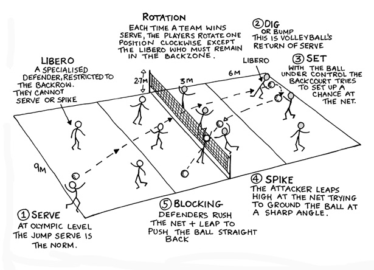

Basic Rules

Playing The Game
- Maximum of three hits per side
- Player may not hit the ball twice in succession (A block is not considered a hit)
- Ball may be played off the net during a volley and on serve
- A ball touching a boundary line is good
- A legal hit is contact with the ball by a player body above and including the waist which does not allow the ball to visibly come to a rest
- If two or more players contact the ball simultaneously, it is considered one play and the players involved may not participate in the next play
- A player must not block or attack a serve
- Switching positions will be allowed only between front line players. ( After the serve only )
Basic Rule Violations
- Stepping on or over the line on a serve
- Failure to serve the ball over the net successfully
- Hitting the ball illegally ( Carrying, Palming, Throwing, etc. )
- Touches of the net with any part of the body while the ball is in play. If the ball is driven into the net with such force that it causes the net to contact an opposing player, no foul will be called, and the ball shall continue to be in play
- Reaching over the net, except under these conditions a) When executing a follow-through b) When blocking a ball which is in the opponents court but is being returned ( the blocker must not contact the ball until after the opponent who is attempting to return the ball makes contact). Except to block the third play
- Reaches under the net ( if it interferes with the ball or opposing player )
- Failure to serve in the correct order
- Blocks or spikes from a position which is clearly not behind the 10-foot line while in a back row position
The Court
- Both indoor and outdoor courts are 18 m x 9m
- Indoor courts also include an attack area designated bya line 3 m back from the center line
Net Height
- Net height for men, co-ed mixed 6 is 2.43 meters
- Net height for women is 2.24 m